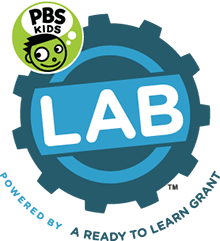
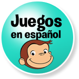
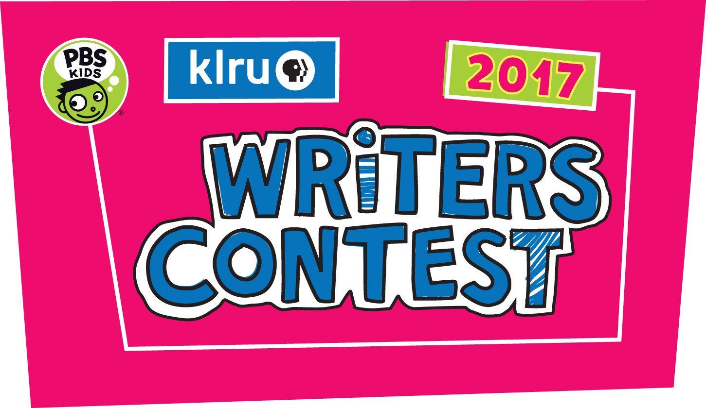

KLRU Learning Resources
-
- PBS LearningMedia
- https://klru.pbslearningmedia.org/
- Your online portal to the PBS digital library. Search by grade level, subject, language, and media type. Safe for all ages!
-
-
- PBS NewsHour Student Reporting Labs
- https://studentreportinglabs.org/
- By giving them a voice and the opportunity to reach millions of people via the PBS NewsHour broadcast and digital platforms, the program inspires youth to speak up and be part of the solution.
-
- American Graduate
- http://www.klru.org/americangraduate/
- American Graduate helps communities implement solutions to the high school dropout crisis.
-
- PBS Kids Lab
- http://pbskids.org/lab
- Exploring new ways to keep kids learning
- 
-
- Games in Spanish/Juegos en Español
- http://pbskids.org/games/spanish/
- 
-
- PBS Parents
- http://www.pbs.org/parents/
- Lots of resources to complement educational goals of our programs, and special stuff just for grownups!
-
-
- GED Connections
- http://klru.fastforwardtx.org/
- Stream episodes of GED Connections to help prepare for the exam. Once you create a free login, you’re ready to begin!
-
- KLRU Kids Writers Contest
- http://www.klru.org/writerscontest
- A local writers contest designed to promote the advancement of children’s reading skills through hands-on, active learning.
- 